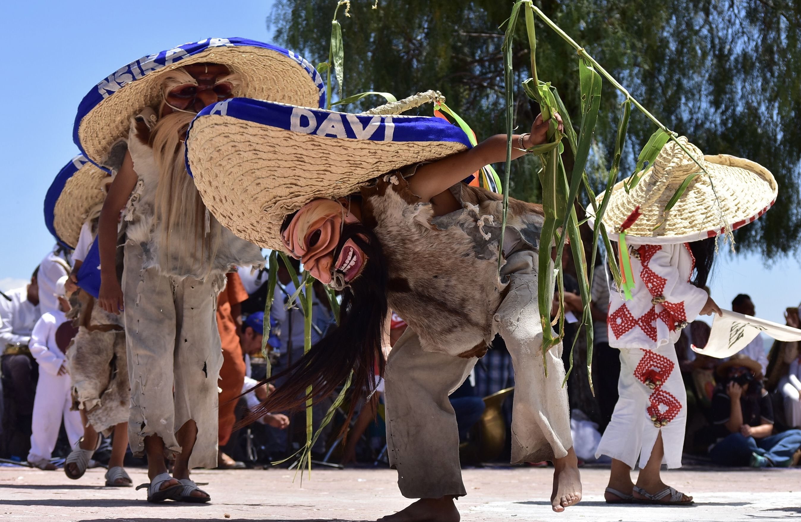
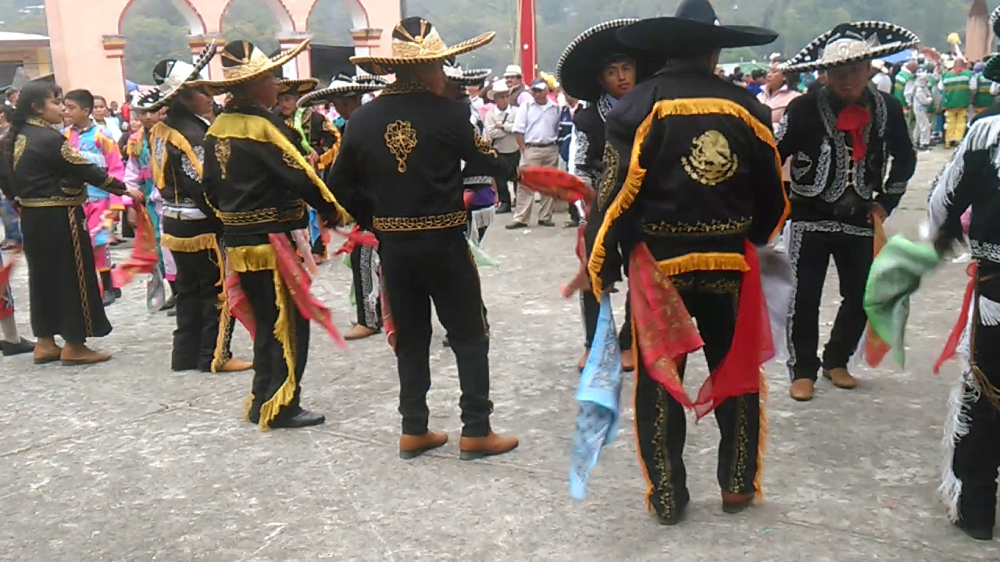

LA DANZA DE L0S HUEHUES
La palabra "huehue" proviene del náhuatl y significa "viejo" o "anciano". La danza tiene orígenes en las
tradiciones indígenas, y con la llegada de los españoles, incorporó elementos europeos y africanos.
La Danza de los Huehues simboliza la lucha entre el bien y el mal, la fertilidad de la tierra y la renovación del
ciclo de la vida. También es una forma de burla y crítica social, donde los bailarines representan diferentes
personajes que satirizan la sociedad
VESTIMENTA
Máscaras: Los huehues utilizan máscaras elaboradas que pueden representar rostros humanos, animales o seres
fantásticos. Estas máscaras son coloridas y detalladas, y cada una tiene un significado específico.
Trajes: Los trajes son vistosos y coloridos, con bordados, lentejuelas y adornos que reflejan la creatividad y la
identidad cultural. Los trajes pueden incluir capas, sombreros y otros accesorios que complementan la máscara y el
personaje que representan.
MÚSICA
La música que acompaña la danza es tradicional y utiliza instrumentos como tambores, flautas, violines y, en
algunas versiones, guitarras y marimbas. La música es alegre y enérgica, con ritmos rápidos que invitan al
movimiento y la celebración. Los patrones rítmicos son repetitivos, creando una atmósfera festiva.
DANZA
La coreografía de la Danza de los Huehues incluye movimientos rítmicos y enérgicos, con pasos de zapateado, giros
y desplazamientos laterales. Los bailarines a menudo se mueven en filas o círculos, interactuando entre sí de
manera coordinada.
Los bailarines pueden formar figuras y patrones específicos, creando una danza visualmente impactante. La danza
puede incluir saltos y movimientos acrobáticos, destacando la habilidad y el entrenamiento de los
danzantes.
En resumen, la Danza de los Huehues es una expresión cultural rica y compleja que refleja la historia, las
tradiciones y la identidad de Tlaxcala. Con su música alegre, movimientos enérgicos y vestimenta colorida, esta
danza celebra la vida comunitaria y ofrece una plataforma para la crítica social y la reflexión. Es una parte
integral del patrimonio cultural del estado y una muestra vibrante de la creatividad y la vitalidad de su gente.

DANZA DE LOS TECUANES
La palabra "tlacololero" proviene del náhuatl "tlacolol", que significa tierra de cultivo en pendiente, y
"tlacololero", que se refiere al campesino que trabaja en estas tierras. La danza tiene orígenes prehispánicos y
ha sido influenciada por elementos españoles durante la colonización.
La Danza de los Tlacololeros simboliza la protección de los campos de cultivo contra los animales salvajes,
especialmente el jaguar (tecuani). Es una forma de pedir buenas cosechas y de agradecer a la tierra por su
fertilidad.
VESTIMENTA
Tlacololeros (Campesinos): Los danzantes visten ropa de trabajo típica de los campesinos, incluyendo pantalones de
manta, camisas de algodón, sombreros de palma y huaraches. Llevan un machete de madera como herramienta simbólica.
Animales y Otros Personajes: La danza también incluye personajes que representan animales como el jaguar
(tecuani), y otros como el perro, que acompaña a los tlacololeros. Los trajes de estos personajes son elaborados,
con máscaras y disfraces que imitan la apariencia de los animales.
MÚSICA
La música de la Danza de los Tlacololeros se interpreta con tambores, flautas, y a veces violines y guitarras. El
ritmo es marcado y acompaña los movimientos de los danzantes. La música es rítmica y repetitiva, diseñada para
guiar los pasos de la danza y mantener la energía y el dinamismo de la representación.
LA DANZA
La danza incluye movimientos que simulan el trabajo agrícola y la protección de los cultivos. Los danzantes
realizan pasos de zapateado, giros y desplazamientos, llevando a cabo una representación teatral de la lucha
contra los animales que amenazan las cosechas.
PERSONAJES
• Tlacololeros (Campesinos): Representan a los agricultores que trabajan en las tierras y protegen los cultivos.
• Tecuani (Jaguar): Representa al jaguar que amenaza las cosechas.
• Perro: Acompaña a los tlacololeros y ayuda en la búsqueda del jaguar.
• Viejo del Monte: Un personaje sabio que guía a los tlacololeros en su trabajo y protección de los cultivos.

DANZA DE LOS CHARROS
La Danza de los Charros tiene raíces en las prácticas ecuestres de los vaqueros y jinetes mexicanos. La charrería,
que combina habilidades ecuestres con elementos de música y danza, es una influencia central en esta tradición.
La danza celebra la destreza, el valor y la elegancia de los charros, simbolizando el trabajo en el campo y las
competencias de charrería. También es una forma de mostrar respeto y admiración por esta figura emblemática de la
cultura mexicana.
VESTIMENTA
Charros: Los danzantes visten trajes de charro, que incluyen pantalones ajustados con botonadura de plata,
chaquetas cortas decoradas, camisas de algodón, botas de cuero, moños y sombreros de ala ancha. Los trajes son
elaborados y representan la elegancia y el orgullo de los charros.
Adornos y Detalles: Los trajes pueden estar adornados con bordados, lentejuelas y otros detalles que reflejan la
riqueza y el estatus de los charros. Los sombreros también son decorados y forman una parte crucial del
atuendo.
MÚSICA
La música que acompaña la Danza de los Charros suele ser interpretada por conjuntos de mariachi o bandas
tradicionales. Los instrumentos incluyen guitarras, violines, trompetas, vihuelas y guitarrones.
El ritmo es alegre y enérgico, con ritmos rápidos y melodías festivas que invitan al movimiento. Las canciones
suelen ser corridos, rancheras y sones que exaltan la vida en el campo y las hazañas de los charros.
DANZA
La coreografía incluye pasos de zapateado, giros y movimientos que imitan las habilidades ecuestres de los
charros. Los danzantes realizan figuras y patrones, a veces simulando el manejo del lazo o el adiestramiento de
caballos.
Los pasos son rítmicos y marcados, con énfasis en el zapateado y el despliegue de habilidades físicas. La danza
puede incluir saltos y movimientos acrobáticos, destacando la destreza de los bailarines.
En resumen, la Danza de los Charros es una rica tradición folclórica que celebra la destreza, el valor y la
elegancia de los charros mexicanos. Con su vestimenta elaborada, música alegre y coreografía dinámica, esta danza
es una expresión vibrante de la identidad cultural y las tradiciones ecuestres de México.
DANZA DE MOROS Y CRISTIANOS
La Danza de Moros y Cristianos es una tradición folclórica con profundas raíces históricas y culturales en varias
regiones de México, incluida Tlaxcala. Esta danza dramatiza la lucha entre los moros (musulmanes) y los cristianos
(católicos) durante la Reconquista en España, y fue llevada a México por los colonizadores españoles. Con el
tiempo, se ha integrado en el folclore local, adquiriendo características propias de cada región.
VESTIMENTA
Moros: Los danzantes que representan a los moros suelen usar trajes coloridos y exóticos, con turbantes, capas y
espadas. Los trajes están adornados con lentejuelas, bordados y otros detalles que representan la riqueza y la
cultura islámica.
Cristianos: Los cristianos visten trajes que imitan la vestimenta de los caballeros medievales europeos, con
armaduras, cascos, cruces y espadas. Los colores predominantes son el blanco y el rojo, simbolizando la pureza y
el sacrificio.
Máscaras: En algunos casos, se usan máscaras para representar los rostros de los personajes, especialmente los
moros. Estas máscaras pueden ser muy elaboradas y artísticas.
MÚSICA
La música que acompaña la danza incluye tambores, flautas, trompetas y, en algunos casos, instrumentos de cuerda
como guitarras y violines. La combinación de estos instrumentos crea un ambiente marcial y festivo.
La melodía es enérgica y rítmica, con marchas y melodías que enfatizan el dramatismo de la lucha. Los ritmos son
marcados y repetitivos, guiando los movimientos de los danzantes.
LA DANZA
La coreografía incluye movimientos marciales y teatrales, con pasos de marcha, giros y desplazamientos que simulan
la batalla entre moros y cristianos. Los danzantes realizan enfrentamientos coreografiados, dramatizando la lucha
con espadas y escudos.
PERSONAJES PRINCIPALES
Capitán Cristiano: Líder de los cristianos, representa la figura heroica que guía a su ejército a la victoria.
Capitán Moro: Líder de los moros, representa la figura del adversario noble y digno.
Soldados: Tanto moros como cristianos tienen un grupo de soldados que los acompañan en la batalla. Cada grupo
sigue a su líder y participa en los enfrentamientos coreografiados.
Otros Personajes: En algunas variantes de la danza, se incluyen otros personajes como princesas, mensajeros y
traidores, que añaden complejidad a la narrativa.
BAILE
VIDEO
ÉPOCA DEL AÑO
LA DANZA DE L0S HUEHUES
Esta danza es típica de México y se realiza durante el carnaval, que generalmente ocurre en febrero o marzo.
Durante el carnaval, se llevan a cabo diversas celebraciones que incluyen bailes folclóricos como la Danza de
los Huehues.
DANZA DE LOS TECUANES
Esta danza también es originaria de México y se lleva a cabo principalmente en el estado de Guerrero durante
las festividades de la Semana Santa, que ocurren en marzo o abril, dependiendo del año.
DANZA DE LOS CHARROS
Esta danza, que es una representación de la cultura charra de México, puede realizarse en diferentes épocas
del año, pero es especialmente común durante las festividades de la Independencia de México en septiembre y
durante las fiestas de la Virgen de Guadalupe en diciembre.
DANZA DE MOROS Y CRISTIANOS
Esta danza es tradicional en varias regiones de España y América Latina, y se realiza en diferentes épocas
del año dependiendo de la región y la festividad local. Por ejemplo, en algunas áreas se realiza durante las
festividades de Semana Santa, mientras que en otras puede ser parte de celebraciones patronales en honor a
algún santo específico.